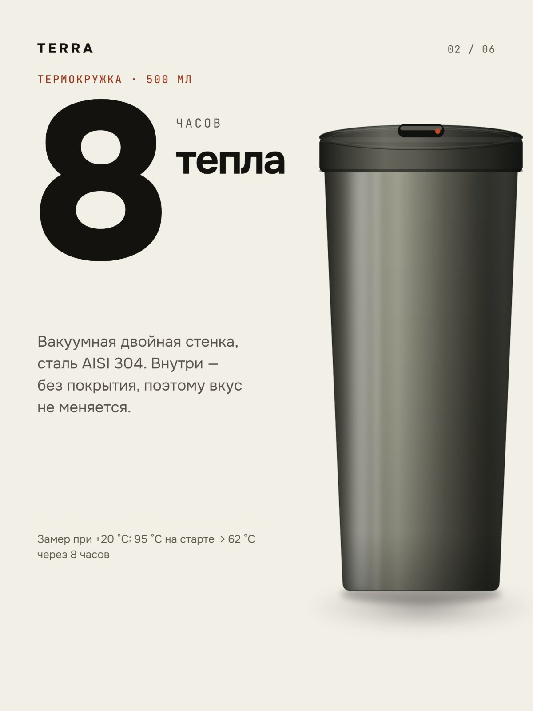
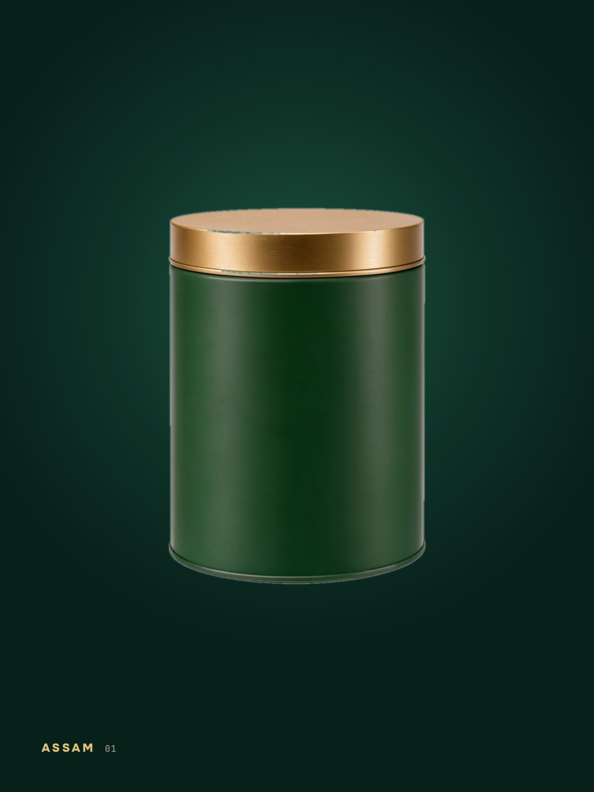
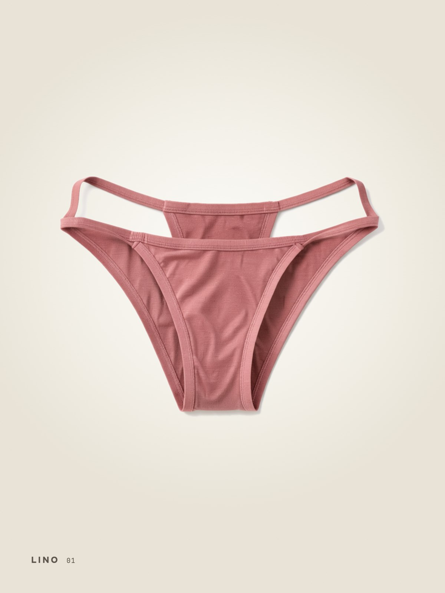
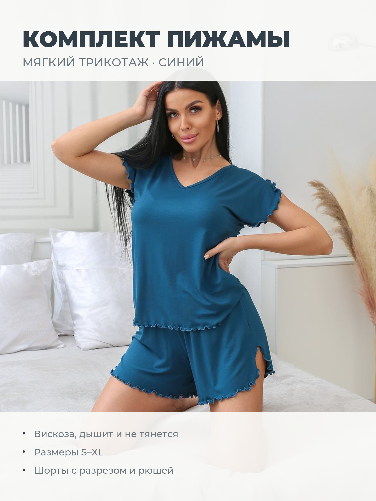
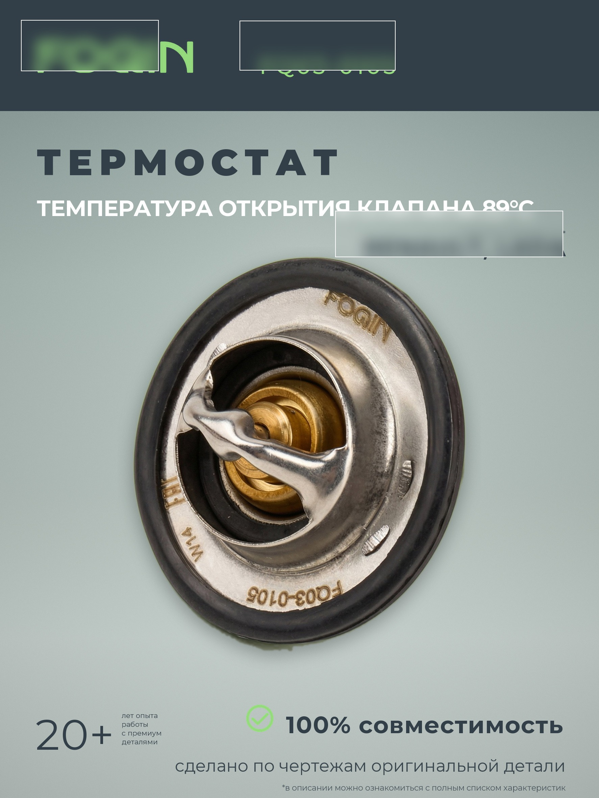
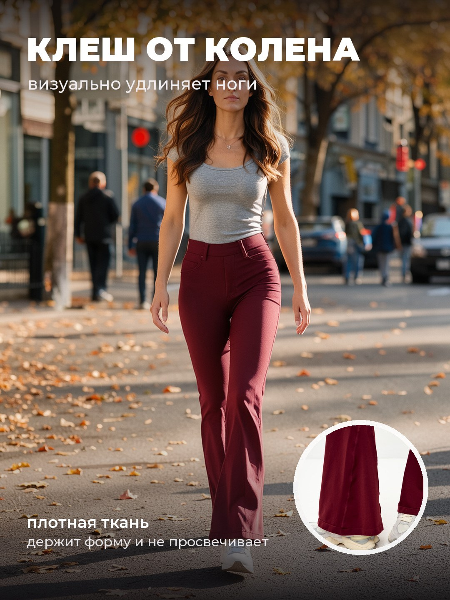
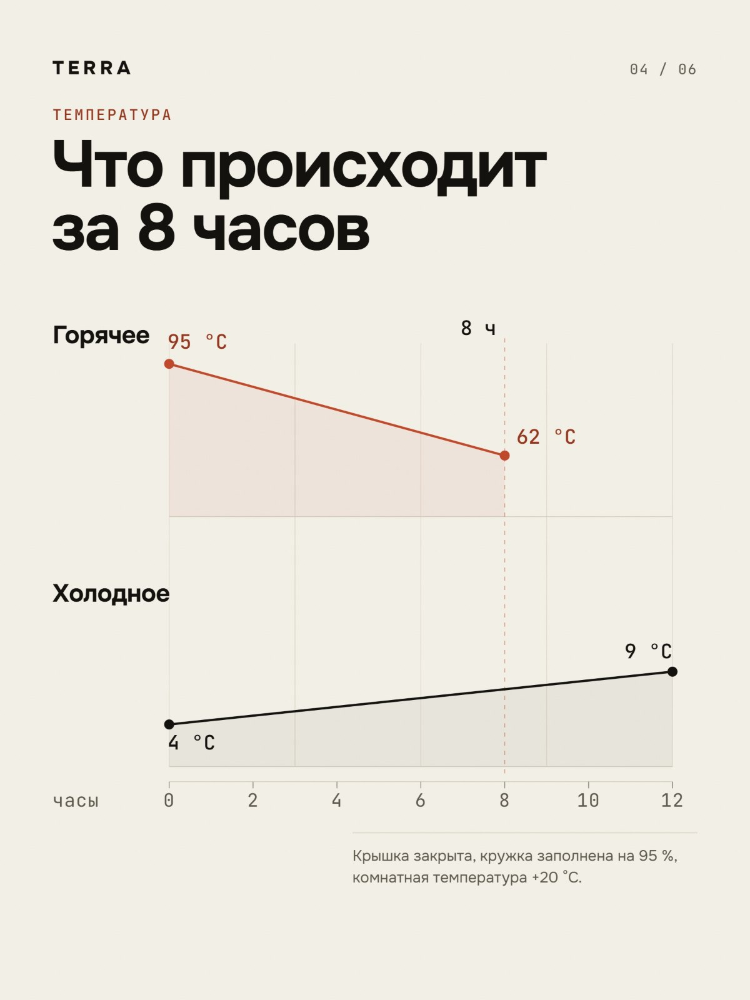
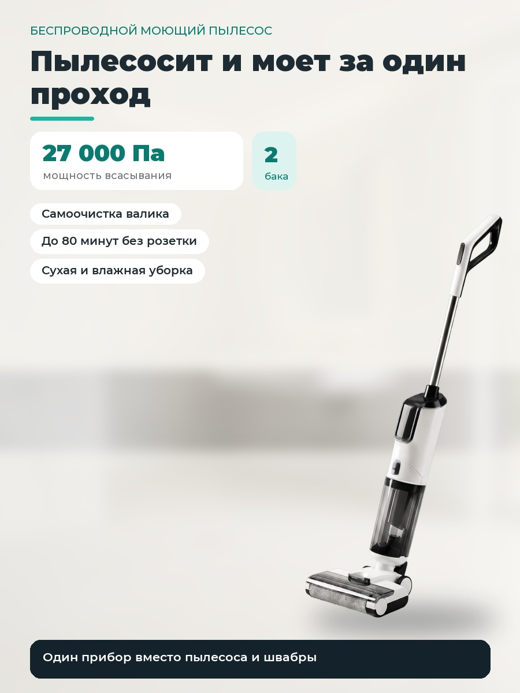
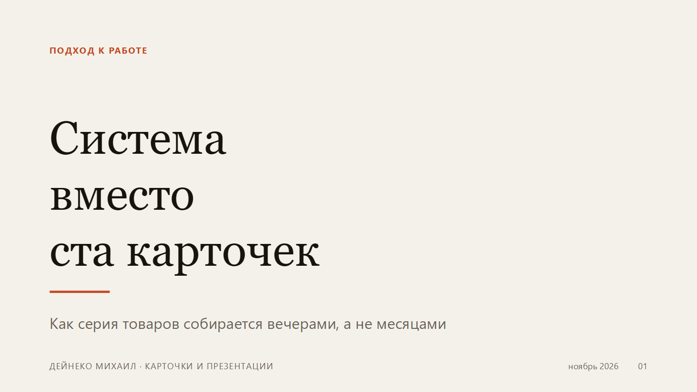
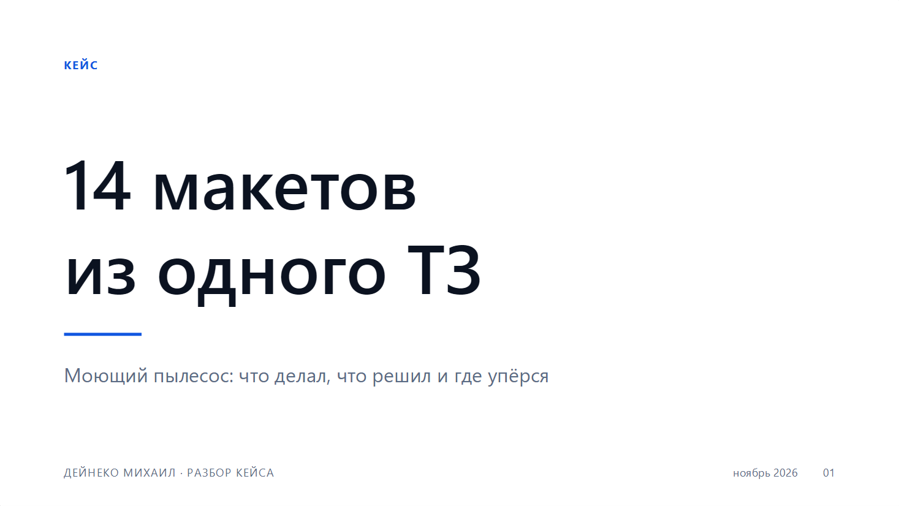

Дом
Система хранения
Полный комплект: обложка, характеристики, размеры, рич-баннер.
Карточки товаров · презентации · инфографика
Два года карточек для Wildberries и Ozon: обложки, инфографика, слайды с характеристиками, описания и атрибуты. Собираю по единой сетке, чтобы линейка выглядела как один бренд. Отдельно собираю презентации: структура, типографика, схемы.
Семь категорий: от автозапчастей до белья и чая

Полный комплект: обложка, характеристики, размеры, рич-баннер.

Состав, происхождение, вес и сроки годности — аккуратно и без выдумок.

Размерная сетка, ткань, посадка, детали — то, что решает в одежде.

Сравнение моделей и размеров, спокойная палитра, без визуального шума.

Применяемость, совместимость, артикулы. Здесь продаёт точность, а не красота.

Обложка с оффером и УТП-слайд: снаряжение продаётся через понятную выгоду.

Цифры, которые понятны с первого взгляда: сравнение, динамика, пропорции.
То, что делал по брифу заказчика

14 макетов: три обложки, было/стало, до/после, покрытия, автономность, комплект.

Сложное объяснил просто: два бака, объёмы, что происходит при заполнении.

Сравнение на одинаковом свете и ракурсе — без обмана в пользу товара.
Структура, типографика, схемы — без слайдов-простыней

Подход к работе: один шаблон на категорию, а не правки по одной карточке.

Разбор кейса: что решил, где упёрся в исходники и что делал вместо этого.
Сначала сетка, типографика и правила. Потом наполнение — поэтому новый SKU собирается за вечер, а не за три дня.
Никаких придуманных цифр: состав, вес, размеры и совместимость сверяю по данным поставщика.
Нейросети — для фонов и сцен. Форму, цвет и фактуру товара не искажаю: это не картинка ради картинки.